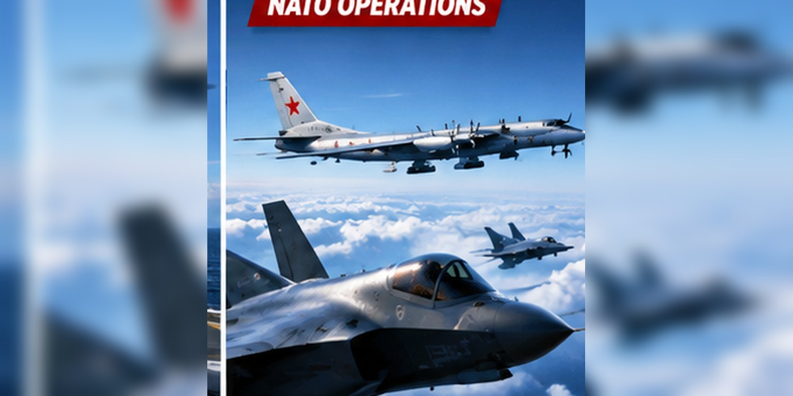

Royal Navy F-35s Intercept Russian Bomber Near HMS Prince of Wales During NATO Exercise
A Russian bomber drew a response from British F-35 fighters during NATO operations near Norway.

A Russian bomber approaches a carrier group
The Royal Navy says F-35 fighters from HMS Prince of Wales were scrambled to intercept a Russian Bear long-range bomber during NATO exercises in northern waters. The carrier group had been operating near Norway.
What was NATO doing?
Exercise Neptune Strike 26-4 involved 17 countries, 20 warships and 40 aircraft, according to the Royal Navy. The activity included aircraft carrier operations, allied coordination and live weapons training.
Was there an attack?
The Royal Navy described an interception, not a battle or missile exchange. An interception can involve fighters identifying and monitoring another aircraft without weapons being fired.
Why the Arctic matters
The North Atlantic and waters near Norway are strategically important for NATO surveillance, reinforcement and maritime defense. Encounters with Russian military aircraft can draw attention even when they do not escalate into fighting.